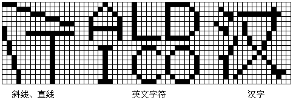
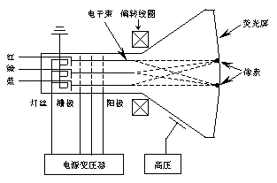

本章所讨论的问题可以说是既熟悉又陌生。当我们使用21H中断的02H功能或10H中断的0EH功能将文字显示在屏幕上时，我们对文字的出现和消失仍然是一无所知。正是由于这个原因，仅靠现有的这点知识还无法制作出能输出"丰富多采"的文字的程序。学习这一章的目的，就是要学习如何美化我们的程序。
所谓显示系统，其实包含两个部分--显示器和显示卡。显示器是由一个显像管和一些控制电路构成。通常我们把那个显像管称为"阴极射线管"，简称CRT。从原理上讲它和电视机上用的显像管一样，只不过更精密一些。至于那些控制电路和一般的电视机电路差不多。监视器仅仅作为一种输出设备，和我们要研究的程序设计没有关系。真正需要了解的是那块显示卡。打开电脑的机箱，就会发现主机板上立着一些小电路板，其中有一块板和显示器相连，那块板就是显示卡。显示卡由这样一些硬件构成：
这是一片存储有BIOS程序的只读存储器。前面章节中也讨论过BIOS，事实上BIOS分为多个部分，一部分在主板上的ROM中，称"系统BIOS"，其它部分分散在各个插卡上。这样做的原因是主板上ROM的容量有限，不可能有效地控制PC机的所有设备。一些具有特殊功能的设备由于不能被系统的BIOS控制，因而在制造这些设备时，厂商为它们单独编写了BIOS程序，以弥补系统BIOS的不足。显示卡的种类繁多，系统BIOS仅能管理其中几种，所以大量的增强型显示卡都有自己的BIOS程序，以充分发挥自身的性能。
这是显示卡上最重要的硬件。如果想在屏幕上显示文字或图形，必须将相应的数据存入显示卡上的RAM中，这些数据经卡上的控制电路处理后变成视频信号传送给显示器，我们即可在屏幕上看到相应的信息。
这些RAM有时也称为"显示缓冲存储器"。无论是文字还是图形，屏幕上出现的内容和显示缓存中的数据具有一些固定的对应关系。这样的对应关系就是本章将要讨论的一个重点问题。了解这些对应关系后，程序就可以直接将数据放入显示缓存中并在屏幕上看到正确的显示。这样就无须再用什么INT XXH之类死板的功能调用了。
端口的作用不亚于显示RAM，它有两个功能：一是反映显示卡上控制电路的工作状态，二是对卡上的电路起控制作用。端口是可以被程序读写的，因此也是我们将要讨论的内容。
将显示RAM中的数据转化成显示器需要的信号，使我们能从显示器上看到信息。它和我们的程序无任何直接联系。显示卡和显示器构成了PC电脑的显示系统，其中显示卡是我们关注的对象，再具体一些，卡上的ROM BIOS、RAM和端口是我们讨论的重点内容。后面我们将分别研究这三个部分。
早在八十年代初，IBM为其第一台PC电脑设计的MDA显示卡就成为了第一个工业标准。MDA的全称是"Monochrome Display Adapter"，即单色字符显示适配卡。它带有4KB的RAM，可以支持80列25行的单色字显示。但它无图形功能，也无彩色，因此使用范围不大。
同期推出的还有CGA卡（Color Graphics Adapter），即彩色图形适配卡。CGA卡上带有16KB的RAM，可以支持80列25行和40列25行的彩色字符显示，字符颜色有16种。它具有彩色图形功能，但显示图形时同时在屏幕上最多出现4种颜色。
随后，IBM为其AT电脑配备了EGA卡（Enchanced Graphics Adapter），带有256KB的RAM，图形能力大大增强，显示图形时屏幕上最多同时出现16种颜色。八十年代后期IBM为其PS2机型设计了"视频图形阵列（Video Graphics Array）"，也就是现在常说的VGA卡，性能十分优异。它带有256KB的RAM，显示图形时同屏最多出现256种彩色。而且这块卡具有配色功能，可以调配出262144种颜色，不过同时可显示的仅是其中256种。与VGA同期推出的还有MCGA卡（Multicolor Graphics Array）--多颜色图形阵列。也可同屏显示256种颜色。
期间一些其它的厂商也推出了一些自行设计的显示卡，具有代表性的有HGC卡、CGE卡等。国内也出现了一些能处理汉字的显示卡，如长城0520CH、CEGA、CMGA卡等。由于IBM的CGA、EGA和VGA已经成为工业标准，所以这些非IBM生产的显示卡都做到了与IBM标准兼容，同时也有自己的新特性。这些新特性均比IBM标准要有所增强。
随着技术的发展，各类新型显示卡不断出现，IBM设计了8514/A卡和XGA卡，性能优异，但由于在价格上没有竞争力，所以没有成为工业标准。一些生产兼容卡的厂商却搞出了一批高性能低价格的显示卡，如Tseng Labs Inc的ET3000，Trident Inc的TVGA 8900卡，Paradox的PVGA等。这些卡一般都带有512KB-1MB的RAM，全面兼容IBM VGA卡，一些卡甚至能同屏显示65536种颜色。
进入九十年代，随着局部总线标准的制定及Pentium的出现，大量新型的显示卡涌现出来。它们一般带有1MB-4MB的RAM，并具有高性能的图形加速器，有些甚至具有3D图形加速器，这些显示卡使PC机的图形功能上升到一个全新的高度，彻底使我们改变了对计算机的看法。
如果用放大镜仔细地观察显示器上的文字和图形，就会发现它们实际是由一些密密麻麻的亮点组成。图6-1反映出用点组成文字的情况：
可以想象到显示器上点的密度越大，显示出的图形或文字就越精细。一般情况下常用"显示分辨率"的概念来衡量显示系统的性能。所谓显示分辨率指得是显示系统同屏能显示点的数量，一般用"水平点数x垂直点数"表示。如CGA卡的最大显示分辨率为640x200点，标准EGA卡 的分辨率为640x350点，标准VGA卡的最大分辨率为640x480点，一些新型的兼容VGA卡可提供最大为1024x768点的分辨率，还有一些专为CAD系统设计的显示卡最大分辨率可达1600x1200点，甚至更高。当然要想使用这样高的分辨率还需要与显示卡相匹配的显示器才行。

构成图形和文字的另一个要素就是颜色，因此衡量显示系统性能时还常用"颜色分辨率"的概念。所谓颜色分辨率指得是显示系统可同时显示出的颜色数量。CGA卡在显示文字时最多同时显示16种颜色，显示图形时最多同时显示4种颜色。而EGA卡显示图形时最多有16种颜色，VGA卡最多有256种，新型的显示卡有64K种或16.7M种颜色。
这里有必要谈一下颜色究竟如何产生的。稍有美术基础的读者都清楚调色的原理，我们用红、黄、蓝三种颜色可以调配出很多种不同的色彩，计算机产生颜色也是应用这个道理。我们在前面谈到过显示器的核心是CRT--阴极射线管，下面这个图反映了CRT的基本结构：

CRT内部有三个电子枪，它们用于产生电子束轰击涂在荧光屏上的荧光粉。屏幕上涂敷的荧光粉有三种，在电子束的轰击下分别产生红、绿、蓝三种色彩，一般把这三种色彩简称为R、G、B。
屏幕上每个点都由三种荧光粉组成。打开蓝色电子枪，被轰击的点的颜色就是蓝色；同时打开蓝色和绿色电子枪，被轰击的点的颜色就是蓝＋绿＝青色；若三个电子枪均打开，那么点的颜色就是白色。
如果改变了加在电子枪上的信号电压，那么电子束的强度就会改变，这使得荧光粉发出的光强度也发生变化，从而使彩色点的亮度随之改变。
一般情况下，可以认为显示模式就是显示系统的各个不同的工作状态。或者也可以认为是一组显示参数的整体化表示。
PC的显示系统有些特别，它分为两种完全不同工作模式，字符模式和图形模式。字符模式也被称为"A/N（Alpha/Number Mode）"模式，即"字母/数字"模式。在这种工作模式下，程序所要处理的数据是字符的ASCII码。前面已经提到计算机中的文字是由很多点组成，不过在"A/N"模式下程序无需处理组成字符的每个点。这些点的处理是由显示卡自己完成。
图形模式也被称为"APA（All Point Addressable Mode）"模式，即"所有点可寻址"模式。从这个名字就可以看出，在"APA"模式下，所有的点在显示缓存中都是占据存储空间的，因此程序所要处理的最小元素就是屏幕上的每个点。
在这两种显示模式之中又细分为若干具有不同参数的显示模式，在这些具体的显示模式之间有一些差别如显示分辨率、同屏最多可显示的颜色数等等。比如说有一种APA模式提供了320×200的显示分辨率和同屏最多显示4种颜色的显示参数，而另一种APA模式提供了640×480的显示分辨率和同屏最多显示16种颜色的显示参数，一旦程序选择了其中一种模式，则显示系统就会自始至终按照这组显示参数工作，直至程序选择了新的显示模式。
既然PC机的显示系统具有多种工作模式，那么如何方便的区分和选择这些不同的显示模式呢？可以想到为所有可使用的显示模式编上号即可解决问题，事实上在PC电脑中也确实是这样做的。下面这个表给出了标准VGA卡可以提供的的所有显示模式：
| 模式号 | 字符/图形 | 显示分辨率 | 字符列x字符行 | 同屏颜色数 |
| 0 | 字符 | 360x400 | 40x25 | 16 |
| 1 | 字符 | 360x400 | 40x25 | 16 |
| 2 | 字符 | 720x400 | 80x25 | 16 |
| 3 | 字符 | 720x400 | 40x25 | 16 |
| 4 | 图形 | 320x200 | 40x25 | 4 |
| 5 | 图形 | 320x200 | 40x25 | 4 |
| 6 | 图形 | 640x200 | 80x25 | 黑白 |
| 0DH | 图形 | 320x200 | 40x25 | 16 |
| 0EH | 图形 | 640x200 | 80x25 | 16 |
| 0FH | 图形 | 640x350 | 80x25 | 黑白 |
| 10H | 图形 | 640x350 | 80x25 | 16 |
| 11H | 图形 | 640x350 | 80x25 | 2 |
| 12H | 图形 | 640x480 | 80x25 | 16 |
| 13H | 图形 | 320x200 | 40x25 | 256 |
表中的每个编号都指定了一种显示模式，也就是说每个数字实际指定了一组显示参数。如表中的模式3，它反映出显示系统在此模式下将提供80列25行的A/N显示，且字符颜色可有16种等。这个模式就是开机启动后DOS使用的显示模式。
每种显示卡所能提供的显示模式是有区别的，如MDA卡只能提供模式7（表中未收入），CGA卡可以提供模式1-6，而一些兼容的新型VGA卡可以提供比标准VGA更多的显示模式。至于程序应如何选择显示模式，这个问题将在稍后讨论。
有关显示系统还有一些更多的内容，但是这些知识离程序设计比较远，所以不再深入讨论。有了这些基本知识，我们就可以开始研究有关显示系统的程序设计了，在本章的后面我们将按照Video BIOS，Video RAM和Port Program的顺序来详细讨论PC电脑的显示系统。